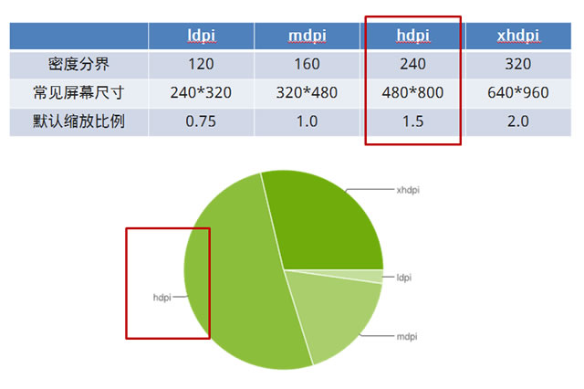
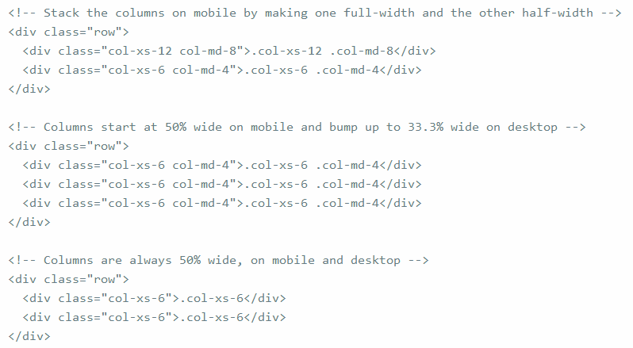
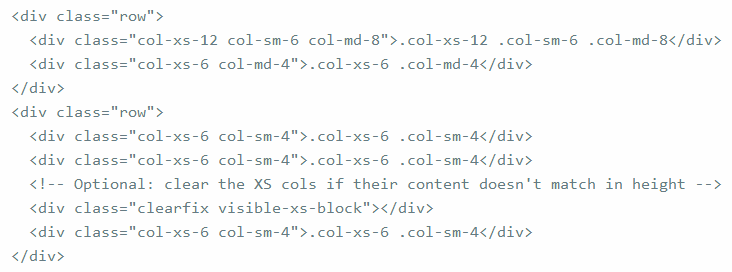
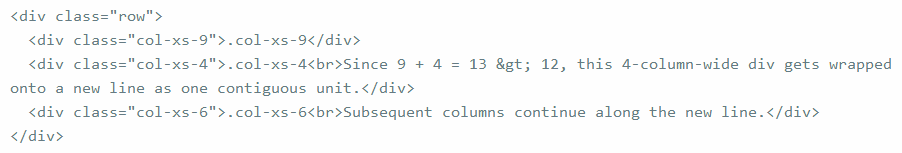

【CSS-task10】如何使用媒体查询
小课堂【郑州第42期】
分享人：石林涛
目录
1.背景介绍
2.知识剖析
3.常见问题
4.解决方案
5.编码实战
6.扩展思考
7.参考文献
8.更多讨论
1.背景介绍
现今每天都有更多的手机、平板和电脑问市。消费者能够拥有可想象到的各种规格和形状的设备，但是网站开发人员却面临一个挑战：如何使他们的网站在传统浏览器、手机和平板电脑浏览器上有很好的效果，如何在各种大小的屏幕上提供一流的用户体验呢？
答案是：采用响应式设计。响应式设计可以随着所显示的屏幕大小而改变。实现响应式设计的核心就是媒体查询。使用@media媒体查询，可以针对不同的媒体类型定义不同的样式。
2.知识剖析
设置meta标签
<meta name="viewport" content="width=device-width, initial-scale=1.0, maximum-scale=1.0, user-scalable=no">
- width = device-width：宽度等于当前设备的宽度
- initial-scale:初始的缩放比例(默认设置为1.0)
- minimum-scale:允许用户缩放到的最小比例(默认设置为1.0)
- maximum-scale:允许用户缩放到的最大比例(默认设置为1.0)
- user-scalable:用户是否可以手动缩放(默认设置为no，因为我们不希望用户放大缩小页面)
media查询的语法
<link rel="stylesheet" media="(max-width: 800px)" href="example.css" />
<style>
@media (max-width: 600px) {
.facet_sidebar {
display: none;
}
}
</style>
逻辑操作符
一个基本的媒体查询，即一个媒体属性与默认指定的 all媒体类型
@media (min-width: 700px) { ... }
and 关键字用于合并多个媒体属性或合并媒体属性与媒体类型,只有当每个属性都为真时，结果才为真
@media and (max-width:600px) and (min-width: 800px;){......}
媒体查询中使用逗号分隔效果等同于 or 逻辑操作符。当使用逗号分隔的媒体查询时，如果任何一个媒体查询返回真，样式就是有效的。逗号分隔的列表中每个查询都是独立的，一个查询中的操作符并不影响其它的媒体查询。这意味着逗号媒体查询列表能够作用于不同的媒体属性、类型和状态。
@media (min-width: 700px), handheld and (orientation: landscape) { ... }
not键字应用于整个媒体查询，在媒体查询为假时返回真,not关键字仅能应用于整个查询，而不能单独应用于一个独立的查询。
@media not all and (monochrome) { ... }
@media not (all and (monochrome)) { ... }
@media (not all) and (monochrome) { ... }
@media not screen and (color), print and (color)
@media (not (screen and (color))), print and (color)
only 关键字防止老旧的浏览器不支持带媒体属性的查询而应用到给定的样式。
<link rel="stylesheet" media="only screen and (color)" href="example.css" />
@media only (min-width: 700px) { ... }
媒体属性
- width:浏览器可视宽度
- height:浏览器可视高度
- device-width:设备屏幕的宽度
- device-height:设备屏幕的高度
- orientation:检测设备目前处于横向还是纵向状态
- aspect-ratio:检测浏览器可视宽度和高度的比例。(例如：aspect-ratio:16/9)
- device-aspect-ratio:检测设备的宽度和高度的比例
- color:检测颜色的位数。（例如：min-color:32就会检测设备是否拥有32位颜色）
- color-index:检查设备颜色索引表中的颜色，他的值不能是负数
- monochrome:检测单色楨缓冲区域中的每个像素的位数。
- resolution:检测屏幕或打印机的分辨率
- grid：检测输出的设备是网格的还是位图设备。
device-aspect-ratio设备宽高比
设备宽高比查询设备像素(device pixel)与CSS像素(css pixel)一样吗？
设备像素设是物理概念，指的是设备中使用的物理像素。比如iPhone 5的分辨率640 x 1136px。
CSS像素是Web编程的概念，指的是CSS样式代码中使用的逻辑像素。在CSS规范中，长度单位可以分为两类，绝对(absolute)单位以及相对(relative)单位。px是一个相对单位，相对的是设备像素(device pixel)。
比如iPhone 5使用的是Retina视网膜屏幕，使用2px x 2px的 device pixel 代表 1px x 1px 的 css pixel，所以设备像素数为640 x 1136px，而CSS逻辑像素数为320 x 568px。

每英寸像素(pixel per inch)：ppi，表示每英寸所拥有的像素(pixel)数目，数值越高，代表显示屏能够以越高的密度显示图像。
设备像素比(device pixel ratio)：以上计算出ppi是为了得到密度分界，获得默认缩放比例，即设备像素比。
3.常见问题
screen是什么，有哪些媒体类型?
4.解决方案
screen是媒体类型(media type)的一种，用于电脑屏幕、智能手机、平板等，媒体类型也就是网页显示的媒介，比如，一般在screen上显示时，页面字体要大一些，在纸质媒体显示时，页面字体要小一些。那么如何告诉别人某个样式是适用于何种媒体类型的呢？这就要靠声明media type来实现了。
大部分媒体类型都已弃用了，下面这些是仍可以使用的
- all:用于所有设备
- print:用于打印机和打印预览
- screen：用于电脑屏幕、智能手机、平板等
- speech：应用于屏幕阅读器等发声设备
编码实战
下面是一个简单的响应式网页，断点在1200px，768px
6.扩展思考
Bootstrap CSS3媒体查询断点
Bootstrap响应式设计，就是一个典型的媒体查询CSS框架，它设定了某些媒体查询节点，根据不同设备宽度，写不同的断点位置来做响应式查询。
/*========== Mobile First Method ==========*/
/* Custom, iPhone Retina */
@media only screen and (min-width : 320px) {
}
/* Extra Small Devices, Phones */
@media only screen and (min-width : 480px) {
}
/* Small Devices, Tablets */
@media only screen and (min-width : 768px) {
}
/* Medium Devices, Desktops */
@media only screen and (min-width : 992px) {
}
/* Large Devices, Wide Screens */
@media only screen and (min-width : 1200px) {
}
/*========== Non-Mobile First Method ==========*/
/* Large Devices, Wide Screens */
@media only screen and (max-width : 1200px) {
}
/* Medium Devices, Desktops */
@media only screen and (max-width : 992px) {
}
/* Small Devices, Tablets */
@media only screen and (max-width : 768px) {
}
/* Extra Small Devices, Phones */
@media only screen and (max-width : 480px) {
}
/* Custom, iPhone Retina */
@media only screen and (max-width : 320px) {
}
7.参考文献
参考二：css媒体查询---MDN
参考三：媒体查询---菜鸟教程
8.更多讨论
栅格系统在不同屏幕设备上的自适应布局是怎么实现的呢？
实例：移动设备和桌面屏幕
实例：手机、平板、桌面
实例：多余的列（column）将另起一行排列
鸣谢
感谢大家观看
BY : 石林涛